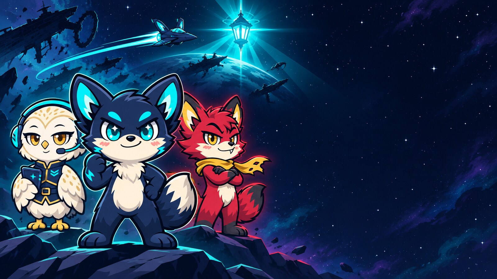
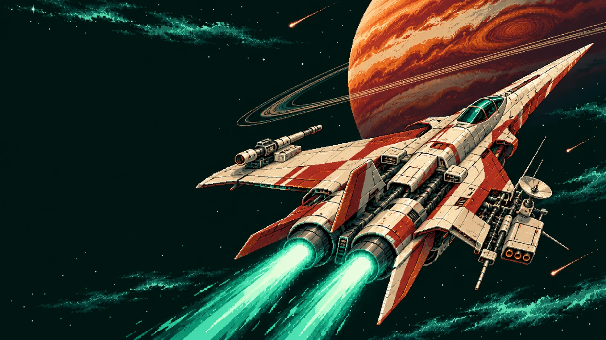

Claude Code · Fable 5.2
Kurai and the Fallen Fleet
A side-scrolling shooter in four missions. Keyboard or touch screen.
PlayBoth agents got exactly the same five prompts, one per day, each in its own folder. Plain JavaScript, no libraries, every picture drawn in code or generated from their own prompts, and all the music and sound effects synthesized in code. These are the games as they stood at the end of the week. Play both, then tell us which one you prefer.

A side-scrolling shooter in four missions. Keyboard or touch screen.
Play
A vertical shooter in four missions. Keyboard or touch screen.
PlaySound starts after your first key press or tap: browsers block audio before that. Each game has its own music and sound switches on the title screen.
Watch how they were built: the video on Kurai Kuto.